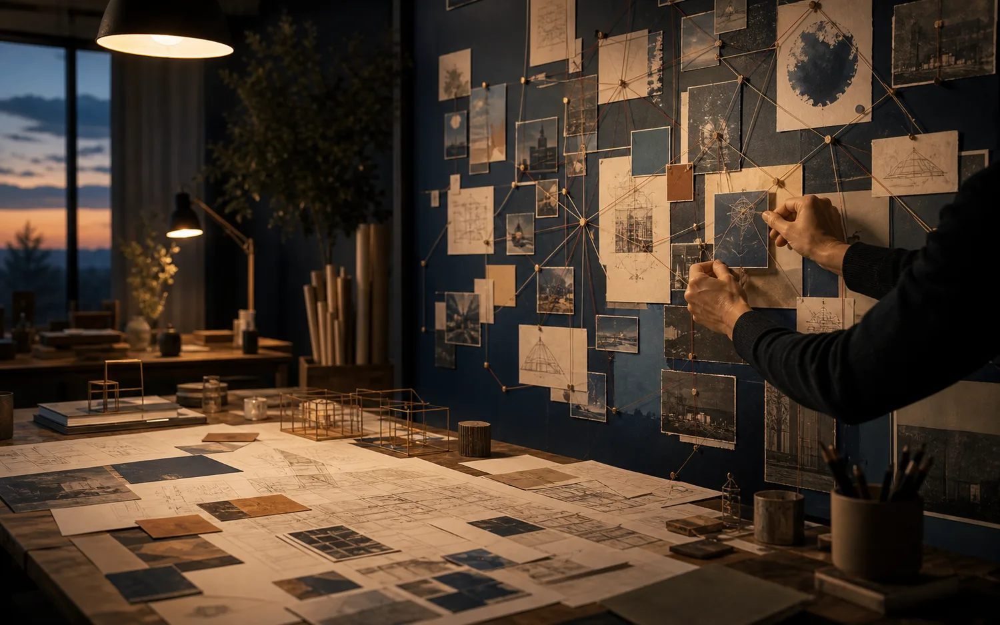
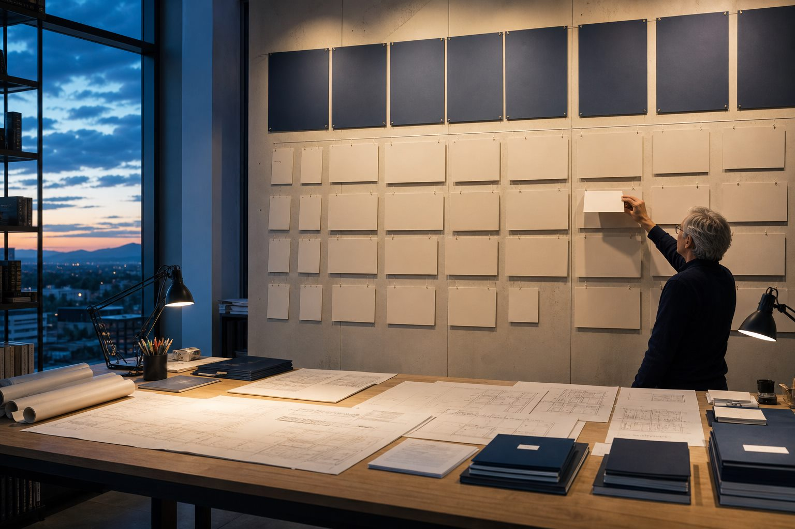
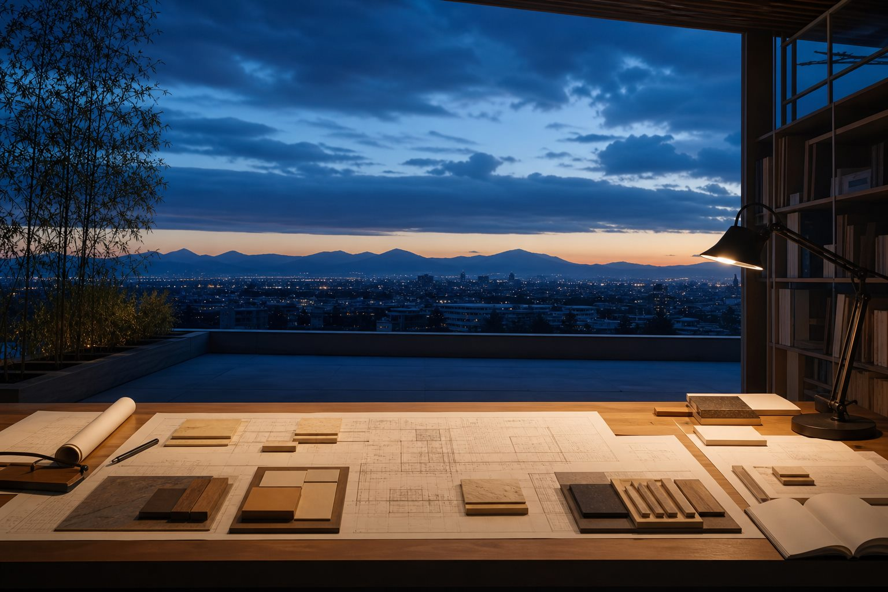

Пятый уровень пути: авторская система и право готовить и инициировать Мастеров
Многомерный Мастер
Здесь предмет работы — целая система: метод, стандарты, Подмастерья, команда, проекты и право готовить и инициировать Мастеров в финале пути.
Многомерный Мастер создаёт направление, в котором могут вырастать другие Мастера, и учится держать несколько линий жизни из устойчивого центра.
Вход начинается с личного разговора, готовности к авторству и честного понимания, зачем вам этот масштаб.

Узнавание
Когда роль учителя становится тесной
Вы умеете передавать практику и чувствуете: дальше хочется родить собственную форму.
У вас появляются свои наблюдения, ученики, проекты, язык, методические находки — и всё это просит системы.
Вы видите людей и ситуации сразу в нескольких слоях: личность, энергия, дело, деньги, отношения, среда.
Вам важно создать пространство, где другие смогут расти самостоятельнее.
Архитектура направления
На этом уровне создаётся метод и способ передавать качество дальше
Если Мастер-Учитель отвечает за учеников, то Многомерный Мастер начинает отвечать за систему, в которой будущие Мастера смогут расти самостоятельно.
Что считается качественной передачей
Появляются критерии: кто готов вести людей, где нужна супервизия, какие границы поддерживают чистоту метода и как сохранять качество.
Учебная система
Метод начинает оформляться в язык, структуру, упражнения, вводные материалы, разборы и понятные маршруты для учеников и Мастеров.
Рост будущих ведущих
Человек учится видеть, кому можно дать больше ответственности, а кому пока нужна практика, честная обратная связь и взросление.
Распределять роли
Многомерность проявляется в способности строить партнёрства и удерживать несколько направлений из внутреннего центра.
Три способа реализации
Многомерность начинается там, где человек видит свой настоящий способ служить миру
В мастерском пути у каждого может раскрыться свой способ реализации. Один человек проводит новое качество через присутствие, другой строит системы, третий глубоко работает в своей сфере. На пятом уровне важно увидеть, какой масштаб действительно ваш.
Проводник квантовой эволюции
Создаёт атмосферу, речь, творчество, пространство и состояние, рядом с которым другим легче увидеть свой следующий шаг.
Архитектор квантовой реальности
Собирает проекты, сообщества, образовательные форматы, партнёрства и новые системы жизни, где чувствительность соединяется со структурой.
Мастер квантовой эволюции
Идёт глубоко в конкретную область: тело, сознание, семья, бизнес, обучение, творчество или другое поле, где может точно проводить людей через этап.
Многомерный Мастер
Соединяет несколько линий: умеет проводить, создавать систему и работать точечно, сохраняя центр и человеческую теплоту.
Отличие
Мастер-Учитель передаёт метод. Многомерный Мастер создаёт систему
На уровне Мастера-Учителя человек учится качественно передавать Рейки I и Рейки II: объяснять, инициировать, вести группы, сопровождать учеников.
На уровне Многомерного Мастера появляется другой запрос: сохранить линию передачи и родить систему, где качество может жить шире одного человека.
Мастер-Учитель Рейки
Передаёт известную практику, держит качество обучения, ведёт учеников и группы.
Многомерный Мастер
Создаёт авторское направление, выращивает Мастеров, собирает проекты, команду и собственную систему передачи.

Что создаётся
Собственная живая система
Здесь человек учится видеть практику и весь контур: метод, среду, людей, проекты, деньги, форму передачи и границы ответственности.
Свой язык и структура
Из прожитого опыта, знаний и практики постепенно собирается авторский способ работы.
Среда для роста
Появляется пространство, где ученики и Подмастерья становятся самостоятельнее.
Несколько линий жизни
Мастер учится держать отношения, работу, деньги, творчество и обучение как части одной системы.
Следующее поколение
В финале пути может открыться право готовить и инициировать новых Мастеров, если готовность подтверждена.
Как устроен путь
Здесь собирают вашу форму
Путь начинается с разговора о вашем опыте, учениках, практике, проектах и внутреннем зове. Дальше маршрут строится вокруг того, что именно вы создаёте.
В работе могут появляться собственные проекты, сопровождение учеников, Подмастерья, партнёрские задачи, формирование метода, публичная форма, финансовая зрелость и постепенное расширение ответственности.
Вход через разговор
Светлана смотрит ступени, зрелость и готовность человека выдерживать масштаб из авторской позиции.
Авторский маршрут
Работа строится вокруг реального направления, которое человек способен создавать и проверять жизнью.
Проекты и ответственность
Мастер учится действовать из собранного центра и ясной системы.
Право в финале
Передача мастерского уровня открывается после подтверждённой готовности.
Что меняется
Больше энергии для масштаба
На этом уровне человек учится выдерживать несколько важных линий одновременно: отношения, деньги, дело, ученики, творчество, партнёрства, своё тело и внутренний стержень.
Многомерность — это способность сохранять центр, когда жизнь становится шире, и выбирать людей, проекты и действия из своей внутренней опоры.
Отдельная часть пути — видеть системные связи: с кем строить проект, кто действительно готов брать ответственность, где союз будет зрелым, а где человек снова начнёт спасать, тащить или терять силы в чужом хаосе.
Вместо гонки за признанием появляется более спокойная сила: ясно видеть, что ваше, где ваша ответственность и какая форма действительно хочет родиться через вас.
Светлана и путь
Здесь Светлана работает как наставник создателей
На этом уровне важна партнёрская зрелость: человек раскрывает собственный метод, голос, стандарты и систему передачи в связи с Домом Эволюции.
Задача наставника — помочь увидеть структуру, честно встретиться с иллюзиями, отделить эго от подлинного зова и проверить масштаб реальными действиями.
Светлана Страусс
учредитель Дома Эволюции
Мастер-Учитель Рейки
около 40 лет личного пути в Рейки и мастерстве
более 9 подготовленных Мастеров-Учителей Рейки
Живое объяснение
Светлана о Многомерном Мастере
Перед таким уровнем важно услышать живой голос: как Светлана говорит об авторстве, зрелости и способности держать большее поле.
Архивное видео помогает почувствовать исходный смысл уровня, но публичная страница переводит самые сильные формулировки в более ясный и взрослый язык.
Видео «Мастер Мастеров. Рейки».
Важные опоры
Что даёт уровень Многомерного Мастера
Многомерный Мастер — авторский уровень Дома Эволюции и международно понятный мастерский стандарт Рейки: с этой глубиной передачи можно работать в любой стране, сохраняя качество, этику и связь с линией.
Этот путь даёт Мастеру более широкую опору: собственный метод, зрелую систему, ясные стандарты, способность выращивать других Мастеров и держать поле, где люди становятся самостоятельнее.
Маршрут Рейки
Путь Рейки
Вопросы
Частые вопросы
На этом уровне ответы помогают заранее почувствовать опоры пути: где начинается авторство, как созревает право передачи и почему вход происходит через личный разговор.
Да. В Доме Эволюции Многомерный Мастер собирает полный набор необходимых навыков традиционного направления Рейки Шики Риохо. Светлана разбила этот объём на ступени, чтобы путь проходился легче, эффективнее и качественнее: человек последовательно созревает к мастерскому уровню и устойчивой передаче.
Да. Мастер из другой линии проходит этот этап отдельно и оплачивает его по заявленной стоимости, даже если уже получал мастерскую ступень. Здесь соединяются инициация Мастеров, многомерность и переход Мастера как проводника в другое качество, поэтому стоимость сохраняется такой же, как для остальных участников пути.
Да, если есть живой запрос глубже собрать метод, поле, этику, форму передачи и ответственность за людей, которые будут через это расти.
Желательно иметь опыт работы с людьми, но важнее качество этого опыта: как вы держите границы, ответственность, обратную связь, собственную силу и самостоятельность учеников.
Ориентир — от 9 месяцев до 2 лет. Длительность зависит от способностей человека, готовности, реальных проектов, учеников, внутренней работы и того, что он создаёт в жизни.
Обычно ближе к завершению пути, когда Мастер подтвердил качество, зрелость, этику и способность держать пространство для следующего поколения.
На этом уровне часто появляется собственная система: школа, метод, проектная среда, команда, направление или форма передачи, которая больше одного человека.
Обычно готовность чувствуется как спокойный, устойчивый зов: вам уже мало быть хорошим проводником чужого метода, и вы хотите создать систему передачи, которая сможет служить людям дальше вас.

Авторская система
Если у вас уже есть метод, ученики или проект, который просит системы
Начните с личного разговора: что уже создано, какая система хочет родиться и готов ли этот масштаб открываться именно сейчас.
Стоимость этапа — €3 000личный разговорот 9 месяцев до 2 летавторский маршрутиндивидуальный вход